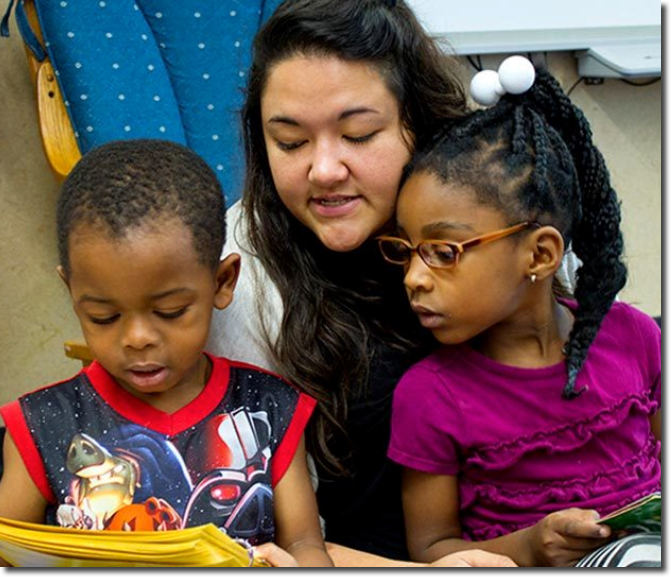

Early Childhood Mental Health Collective Project (ECMHCP)
Paid Undergraduate Mental Health Apprenticeships
The Early Childhood Mental Health Collective Project is a collaborative effort to address the mental health needs of children from birth to the age of five. To accomplish this goal, the organizations in the ECMHCP (i.e., referred to as "The Collective") are partnering with five local early learning programs to develop individualized intervention systems and to collect, analyze, and report evidence of the effectiveness of these interventions. To best accomplish these additional objectives, The Collective will ensure that the families and staff at the local learning programs are well supported by building their capacity to provide early childhood mental health services. This is where you come in.
The ECMHCP will recruit and place 15 (bachelor’s degree seeking) undergraduate students known as Apprentices, from UKMC across the five early learning programs. The ideal apprentice will have an interest in mental health counseling with this age group. Each local early learning center will work with The Collective to develop a customized Mental Health Apprenticeship program. As an undergraduate Mental Health apprentice you will receive generalized and individualized training for that specific early learning center in order to meet the mental health needs of their clients. Recruitment for Mental Health Apprenticeship positions will begin in the Spring 2025 semester. As a Mental Health Apprentice, you would be paid by the program and receive graduated incentives from UMKC for your participation.
The members of The Collective include:
the Early Childhood Innovation Center (ECIC) at the University of Missouri-Kansas City (UMKC) Institute for Human Development
Cornerstones of Care (CoC)
UMKC School of Education, Social Work and Psychological Sciences (ESWPS)
Missouri Association for Infant & Early Childhood Mental Health (MOAIMH)
Kansas Association for Infant & Early Childhood Mental Health (KAIMH)
Five early learning programs discussed in more details below.
Early Start
Emmanuel
El Centro
Operation Breakthrough
Educare
1. Is the Mental Health Apprenticeship the same as enrolling in UMKC’s PSYCH 461 – Field Practicum course in the Dept. of Psychology and Counseling?
No, the Mental Health Apprenticeship is not the same as enrolling in UMKC’s undergraduate PSYCH 461 Field Practicum course.
The Mental Health Apprenticeship is part of a funded research project that allows students to be paid for their participation. UMKC’s PSYCH 461 currently does not allow paid internships).
Mental Health Apprenticeship will be paid employees at their respective early learning site.
In addition, Mental Health Apprenticeship will be paid above the prevailing wage for their participation in this project. They will also receive extensive training related to the project that can be transferable to careers in early childhood education.
There are some similarities to UMKC’s undergraduate PSYCH 461 – Field practicum course. Mental Health Apprenticeship will:
Meeting once a month to discuss your progress, challenges, and achievements.
Enrolling and having long-term access to a Canvas organization-styled course to access materials, upload brief assignments, communicate with fellow apprentice and ECMHCP staff.
2. What will I be able to do after completing this Apprenticeship?
Students who complete our extensive training and participate in our program, will gain the knowledge, skills, and experience to assume roles in other early childhood programs that support infant, toddler, and pre-K mental health.
As an Apprentice, your training will allow you to earn endorsements in infant and early childhood education. Endorsements are not formal certificates but are similar to earning educational badges or micro-credentials that demonstrate competencies, skills, or knowledge in a particular subject area.
These trainings will include:
Practice-Based Coaching,
CLASS Reliability,
Child Screening (ASQ-SE2), and
Reflective Supervision.
You will also be asked to complete courses that complement your Apprenticeship experience and help you earn your endorsements. You may have taken these courses or plan to to take them. These include:
PSYCH 222 - Child Psychology
PSYCH 323 - Theory and Methods of Personality
PSYCH 407 - Cognitive Psychology
PSYCH 433 - Psychological Perspectives on Mental Health
PSYCH 444 - Introduction to Clinical Psychology
3. What will my typical day look like?
Your typical day will depend on the particular early learning site. You can find out more by reading or watching the linked videos below about each site. We also encourage you to ask any additional questions you may have about your role expectations during your interview.
In addition to your Apprenticeship experience, you will enroll in a Canvas organizational course. This is a non-credit course and you will not earn credit towards the 120 credits required for graduation at UMKC.
However, the Canvas course will allow us to organize required activities, meetings, and assignments. Specifically, apprentices will write bi-weekly reflections about their experiences. We will meet once a month via zoom to discuss your experiences at your site, address concern, and focus on developing new skills. Dr. Marte will offer Apprenticeship Office hours and you can also setup one-on-one meetings.
4. Where will my Apprenticeship take place? Where do I apply?
There will 5 early learning sites, but only four are currently hosting Apprentices at this time. To learn more about each site and how to successfully apply for an Apprenticeship, please visit the links below, for their specific requirements.
5. I've applied, what's next?
Be sure to email Dr. Marte, to let him know you've applied so he can begin preparation for an online Canvas course.
Early Start
Emmanuel
El Centro
Operation Breakthrough
Educare
EARLY START
Position: Assistant Teacher Classification: Full Time, Non-exempt Reports To: Program Director
Position Summary
The Assistant Teacher will be responsible for the general supervision and management of a group of children, and will be supervised, trained and evaluated by the Program Director. The Assistant Teacher is to assist the Lead Teacher in providing a warm and nurturing environment in which the child can grow physically, emotionally, socially, and intellectually. The Assistant Teacher is also responsible for meeting the same expectations as the Lead Teacher in his or her absence.
Essential Responsibilities and Duties
Follow the Project Construct curriculum and developmentally appropriate practices
Maintain and manage a safe, healthy, developmentally appropriate environment both inside and outside that promotes learning
Maintain confidentiality of children and family information. Provide any current information to the Family Advocate as needed
Assist in preparing and maintaining the center to meet Missouri licensing requirements outlined in the agency’s policies and procedures
Use developmental screenings, anecdotal notes, and portfolios to assist in developing individualized programming for each child
Assist in the completion of daily attendance, meal counts, lesson plans, call logs, environments checklists, and parent sign-in books
Practice family style serving and dining (sit and eat at the table with children)
Assist in completing all paperwork by the required deadlines; completing reports as specified (ASQ screenings and follow-up, DECA screening and follow-up, DRDP reports, etc.)
Conduct all required parent/teacher conference and home visits
Report suspected child abuse and neglect as required by state licensing guidelines and United Inner City Services’ Procedures
Use down time to meet with the Lead Teacher, complete paperwork, classroom cleaning, reorganization, and compile assessment information
All other job related duties
Skills and Qualifications
Child Development Associate (CDA) or willingness to obtain CDA within one year of employment, or
Associate’s degree in Early Childhood or related degree with minimum 9 credit hours in Early Childhood, and
If placed in a charter partnership classroom, MO DESE Substitute Certification, and 6 months of experience in an early childhood classroom.
Physical Requirements
Be able to lift up to 55 pounds
Excessive climbing, walking, bending, stretching and sitting on floor with children
Exposure to childhood illnesses and diseases
Exposure to varying outside temperatures (heat and cold)
An ideal applicant will:
Be able to complete the essential responsibilities
Meet the physical requirements
Have completed or scheduled to complete the course requirements this semester/fall?
The Academy for Children 1340 S. 30th Street, Kansas City, KS, 66106 913.677.1115 www.elcentroinc.com
Operation Breakthrough

Position: Assistant Teacher Classification: Full Time, Non-exempt Reports To: Program Director
JOB Summary
[Details confirmation needed here.]
Operation Breakthrough’s mission is to help children living in poverty develop to their fullest potential by providing them a safe, loving and educational environment. We also strive to support and empower the children’s families through education, advocacy, emergency aid and referral services.
Essential Responsibilities and Duties
[Details needed here.]
Complete or supervise completion of daily attendance, meal counts, lesson plans, classroom cleanliness checklists, etc.
Implement activities and teaching methods to carry out the program according to the developmental level of the individual child.
Implement the Head Start Curriculum in the classroom and follow Developmentally Appropriate Practices.
Work with and train Co-Teachers in understanding objectives and education plans for each child using screening and observational information; provide on-the-job training for Co-Teachers.
With professional staff, use developmental screening, anecdotal notes and portfolios to assist in developing lesson plans and individualized programming for each child.
Discuss special needs of individual children with teaching staff supervisors, specialists and parents. Provide necessary documentation for referring children.
Complete daily lesson plans incorporating individual, small group, and large group activities.
Plan special event and field trips incorporating Assistant Teacher’s ideas and suggestions.
Maintain a positive classroom environment that promotes learning.
Communicate to Supervisor observed safety, physical, and licensing issues.
Supervise mealtimes.
Arrange and participate in Parent/Teacher Conferences as prescribed by Head Start and Center policies and procedures; acquaint parents with program activities; developmentally appropriate practices; program objectives, determine and communicate needs of each child; interpret curriculum.
Solicit parents’ assistance; explain and promote parent involvement through participation and activities.
Compile an accurate classroom inventory, as prescribed by center and Head Start Staff guidelines, with assistance from the teaching staff.
Develop, arrange, and participate in classroom staff meetings.
Compile and submit all paperwork by the required deadlines; completing reports as specified.
Maintain supplies as needed for classroom activities.